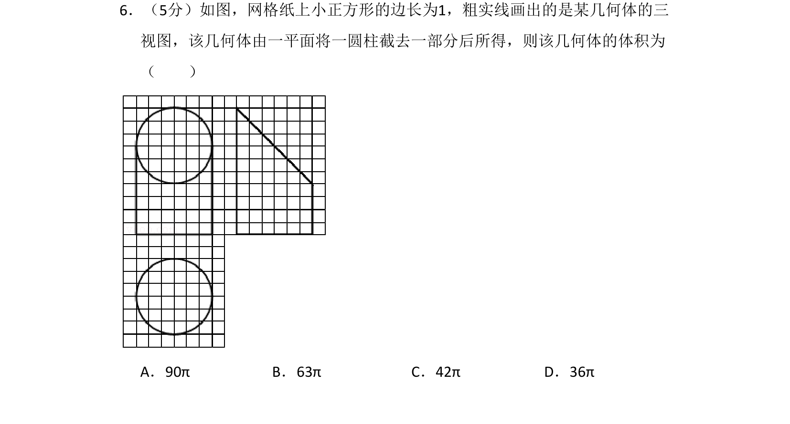
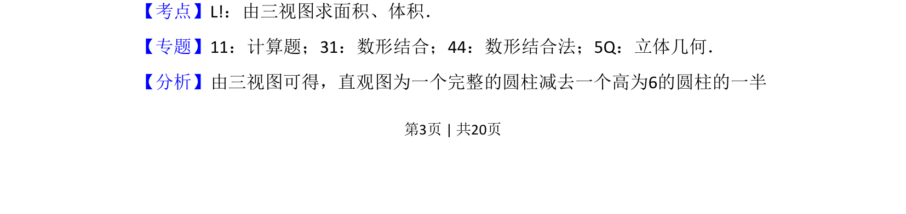
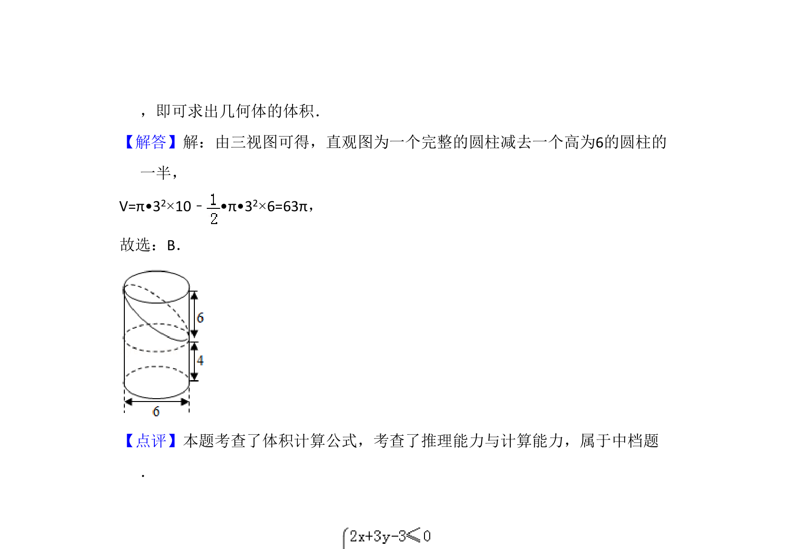

考点：由三视图求体积 空间几何体体积计算 数形结合

通过三视图还原不规则几何体，该几何体为圆柱截去部分后的组合体，求其体积


📄 原 PDF 第 3 页：
素材/真题/吉林/2008-2024·（吉林）数学高考真题/2017年高考数学试卷（文）（新课标Ⅱ）（解析卷）.pdf
6．（5分）如图，网格纸上小正方形的边长为1，粗实线画出的是某几何体的三 视图，该几何体由一平面将一圆柱截去一部分后所得，则该几何体的体积为 （ ） A．90πB．63πC．42πD．36π
【考点】L!：由三视图求面积、体积．菁优网版权所有 【专题】11：计算题；31：数形结合；44：数形结合法；5Q：立体几何． 【分析】由三视图可得，直观图为一个完整的圆柱减去一个高为6的圆柱的一半